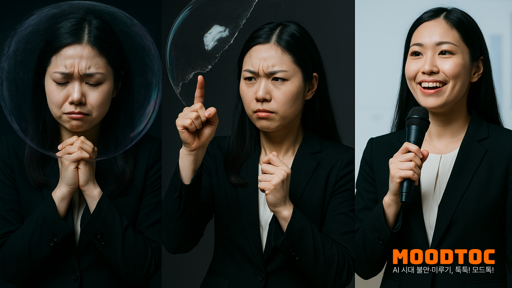

BEHAVIORAL RE-ENTRY SYSTEM
일정 입력 한 번으로, 도착해야 꺼지는 알람 + 업무 막힘 감지 + 감정 저항 처리 + 주간 리포트
책임감 강한 지식노동자·1인 창업자를 위한 실행 복구 일정 시스템
ONRAIL은 ‘의지’가 아니라, 다시 시작하게 만드는 시스템을 제공합니다.
끄고 다시 잠듦 / 스누즈 무한 반복 / 시작이 안 됨
걷고, 눕고, 핸드폰… “왜 이러지?”만 남음
불안/압박/회피가 커질수록 복귀가 더 어려움
ONRAIL은 알람 → 이탈 감지 → 저항 처리 → 미세업무 시작을 한 사이클로 연결합니다.
일정 장소 반경에 도착해야 알람이 해제됩니다. “끄고 다시 잠듦”을 구조적으로 차단합니다.
책상 시간인데 이동/이탈이 감지되면 스누즈 알림이 뜹니다. “지금 막히셨나요?”를 먼저 물어봅니다.
저항감 기록 → 개입(EFT/명상)으로 생리적 긴장을 낮춰 “시작 가능 상태”를 만듭니다.
“딸깍” 수준의 아주 작은 행동을 추천해 다시 레일 위로 올립니다. 복귀는 작을수록 빨라집니다.
감정에 3시간 머무르지 않게. 지금 당장 다시 시작할 수 있는 구조를 제공합니다.
ONRAIL: 행동 재진입(Behavioral Re-entry) 일정 시스템
ONRAIL은 “감정 관리 앱”이 아니라,
일정을 다시 실행하게 만드는 복귀 시스템입니다.
언제/어디서/왜 막히는지 패턴을 요약하고, 나에게 가장 잘 맞는 복귀 방법을 추천합니다.
어떤 장소/시간대에서 이탈이 잦은지 한눈에
저항감이 높은 상황에서 무엇이 가장 잘 듣는지
복귀까지 걸린 시간과 개선 추이를 추적